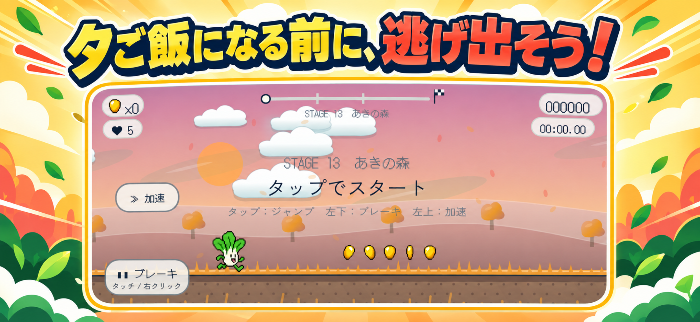
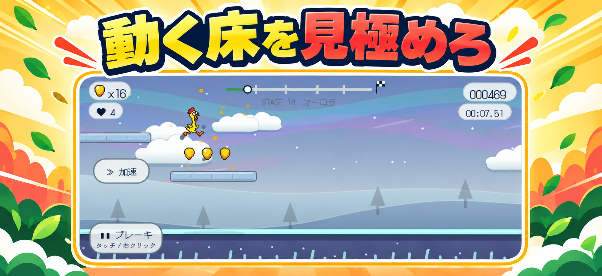
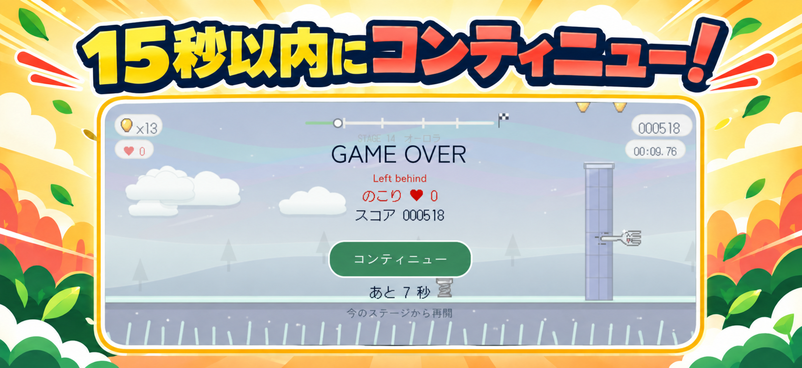

2人のランナー
びっくりチキンはスピード型。チンゲンサイはジャンプ型。ステージに合う主人公を選ぼう。
今夜の夕ご飯にされそうな、びっくりチキンとチンゲンサイ。危険なキッチンを飛び出し、山を越え、川を渡って、自由を目指そう！
びっくりチキンはスピード型。チンゲンサイはジャンプ型。ステージに合う主人公を選ぼう。
雪、霧、強風、雲の上、動く床、川など、ステージごとに違う仕掛けが待っています。
タップでジャンプ。危険の前でブレーキ。加速で一気に駆け抜けよう。


